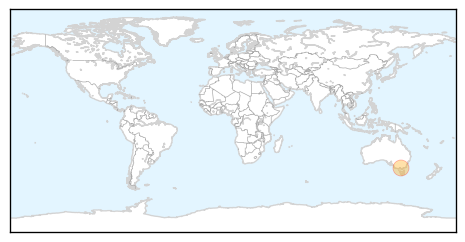
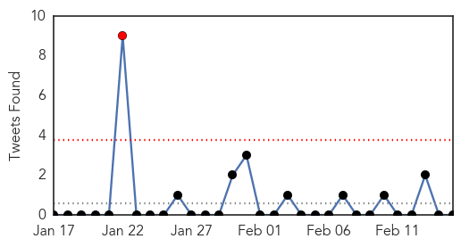
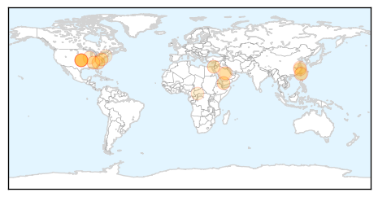

Chikungunya
30-Day Web Trend
0 alerts, 0 warnings

30-Day Twitter Trend
0 alerts, 0 warnings

Article Locations
Article Confidences

Top Articles:
Top Tweets:
-
No tweets found for Feb 15, 2014
Unknown
30-Day Web Trend
0 alerts, 8 warnings
30-Day Twitter Trend
1 alerts, 0 warnings

Article Locations
Article Confidences
Top Articles:
- 0.979
- Scarlet fever on the rise in Cumbria
- 0.975
- Deadly pig virus slowed by steps taken since U.S. outbreak
- 0.937
- Pig virus fears has P.E.I. pork producers on high alert
- 0.917
- Chicago Tribune
- 0.917
- Chicago Tribune
- 0.917
- Chicago Tribune
- 0.866
- Obama pledges $1 billion in loan guarantees for Jordan
- 0.866
- Taha Zaid Khatir, 12, walks with an artificial limb at a prosthetic center in Sanaa
- 0.749
- Deadly pig virus suspected on Prince Edward Island
- 0.734
- Pig epidemic to force up the price of pork: expert
- 0.693
- China Focus: China reports new H7N9 cases, cities ban poultry trading
- 0.662
- Fish sold in Niles sickens two
- 0.605
- 35 patients selected for overseas treatmentSaudi Arabia
- 0.590
- Alternative medicine practitioners want rules eased
- 0.587
- China reports new H7N9 cases, cities ban poultry trading - Headlines, features, photo and videos from ecns.cn
- 0.533
- Refugee Crisis Hits CAR's Neighbors As More Flee Violence - Democratic Republic of the Congo
- 0.525
- Cardiopulmonary issues linked to Taiwan's cold weather: health officials
- 0.505
- Costas puts spotlight on pinkeye
Top Tweets:
-
No tweets found for Feb 15, 2014